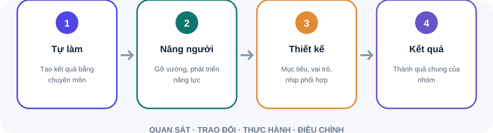

Kết quả thường gắn với phần việc cá nhân.
Kết quả đến qua năng lực và sự phối hợp của đội ngũ.
Nhóm có đủ hướng đi, nguồn lực và hỗ trợ để hoàn thành mục tiêu không?
Cho phép ra một số quyết định và phân công.
Khiến người khác hiểu lý do và muốn góp sức.
Người trầm tính và hướng ngoại đều có thể dẫn dắt tốt.
Nhận diện lúc bạn lắng nghe, kết nối hoặc ra quyết định hiệu quả.
Thử một hành vi cụ thể thay vì chờ cảm thấy sẵn sàng hoàn toàn.
Đặt khung giờ tập trung cho việc cần suy nghĩ.
Nói rõ điều gì sẽ lùi khi xuất hiện yêu cầu mới.
Hỏi nhóm điều gì đang giúp họ làm việc tốt.
Nêu mục tiêu, cách ra quyết định và điều chưa biết.
Ghi nhận việc đã hứa và cập nhật tiến độ cho nhóm.
Đừng giành lại việc ngay.
Xác định trở ngại, kết quả cần đạt và mức hỗ trợ.
Thống nhất mốc rà soát để vừa học vừa kiểm soát rủi ro.
Giá trị của quản lý dịch chuyển dần: bớt giải quyết mọi việc bằng chính đôi tay, tăng khả năng giúp nhóm tự tạo kết quả.

Chọn việc phù hợp để người khác học và chịu trách nhiệm.
Mục tiêu, quyền quyết định và hỗ trợ cần đủ rõ.
Nguồn: Bloom & Van Reenen · Journal of Economic Perspectives
Sơ đồ tóm tắt bốn bước. Giá trị của quản lý dịch chuyển dần: bớt giải quyết mọi việc bằng chính đôi tay, tăng khả năng giúp nhóm tự tạo kết quả. Giao việc có chủ đích: Chọn việc phù hợp để người khác học và chịu trách nhiệm. Tạo điều kiện: Mục tiêu, quyền quyết định và hỗ trợ cần đủ rõ.
Bạn đã thử cách nào? Điều gì đang cản trở?
Kết quả và ranh giới rủi ro ở đâu?
Bạn cần hỗ trợ gì, khi nào xem lại?
Hỏi và lắng nghe trước. Cùng xác định kết quả, quyền quyết định, nguồn lực và mốc kiểm tra. Nếu rủi ro cao, thu hẹp phạm vi thử thay vì giành lại cả việc.
Phòng thực hành: lần đầu quản lý nhóm cũ. Tình huống: Một đồng nghiệp cũ hỏi bạn nên làm gì trong tình huống quen thuộc. Bạn có thể giải quyết nhanh, nhưng muốn xây năng lực cho cả nhóm.. Hãy tự nêu dữ kiện, rủi ro và hành động đầu tiên trước khi mở gợi ý xử lý.
Từ người làm tốt sang người tạo điều kiện cho người khác làm tốt.
Giải thích, lắng nghe và xây dựng niềm tin.
Bảo vệ ưu tiên và tìm hỗ trợ khi cần.